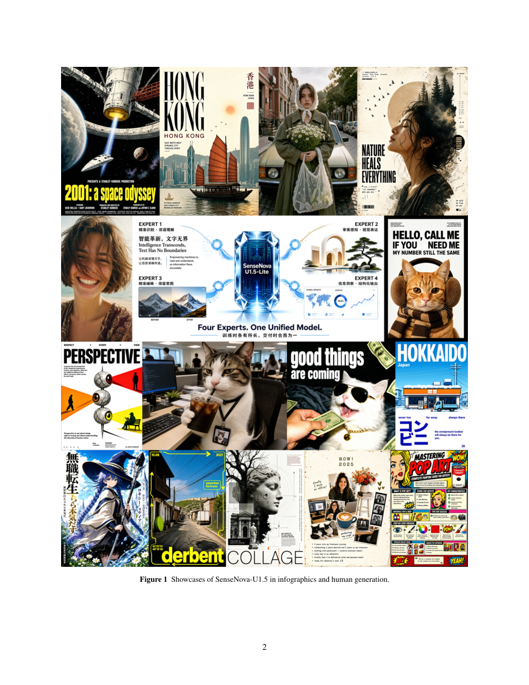

#1
★ 8/10
SenseNova-U1.5: Towards Native Unified Visual Intelligence
SenseNova-U1.5: Towards Native Unified Visual Intelligence

图 Figure · Page 2 of paper
🎯 （AI 中文深度分析暂不可用：Anthropic API 额度不足。英文栏为论文原文摘要，下方链接均可正常访问。）
We launch SenseNova-U1.5, an 8B-MoT native unified multimodal model that understands, reasons about, and generates visual content within an encoder-free and VAE-free architecture
| 维度 | 中文 | English |
|---|---|---|
| ❓ 待解决 的问题 |
（AI 中文深度分析暂不可用：Anthropic API 额度不足。英文栏为论文原文摘要，下方链接均可正常访问。） | We launch SenseNova-U1.5, an 8B-MoT native unified multimodal model that understands, reasons about, and generates visual content within an encoder-free and VAE-free architecture. We strengthen its visual interface through spatially coherent patch reconstruction and scale its training with carefully curated generation and editing data, improved task formulation, structural prompt enhancement, and native resolutions of up to 4K. For post-training, we optimize specialized experts for visual aesthetics, bilingual text rendering, infographic generation, and image editing, and consolidate their capabilities through multi-expert on-policy distillation. Across extensive evaluations, SenseNova-U1.5 largely advances image fidelity, text rendering, complex composition, multi-reference editing, and interleaved generation, while improving instruction following and preserving subject identity, geometry, and unmodified regions. Despite limited exposure to structured formats in its generation data, SenseNova-U1.5 generalizes effectively to long, complex, and structured visual instructions, further proving that multimodal understanding can transfer to visual planning and creation. Together, these findings position native unified modelling as a promising path towards systems that perceive, reason and create within a fully end-to-end framework. We will open-source training code, including supervised fine-tuning, reinforcement learning, and on-policy distillation. |
| 💡 解决 的亮点 |
（AI 中文深度分析暂不可用：Anthropic API 额度不足。英文栏为论文原文摘要，下方链接均可正常访问。） | See the paper’s original abstract in the "Problem / 背景" row above. |
| 🧪 实验 内容 |
（AI 中文深度分析暂不可用：Anthropic API 额度不足。英文栏为论文原文摘要，下方链接均可正常访问。） | See the paper’s original abstract in the "Problem / 背景" row above. |
| 📊 实验 结果 |
（AI 中文深度分析暂不可用：Anthropic API 额度不足。英文栏为论文原文摘要，下方链接均可正常访问。） | See the paper’s original abstract in the "Problem / 背景" row above. |
| 🏁 结论 | （AI 中文深度分析暂不可用：Anthropic API 额度不足。英文栏为论文原文摘要，下方链接均可正常访问。） | See the paper’s original abstract in the "Problem / 背景" row above. |
| 🔗 论文 链接 |
arXiv: 2609.11929v1 · 📥 PDF | |
⚙️ Method · 方法详解
（AI 中文深度分析暂不可用：Anthropic API 额度不足。英文栏为论文原文摘要，下方链接均可正常访问。）
See the paper’s original abstract in the "Problem / 背景" row above.
🌟 Why It Matters · 为什么重要
（AI 中文深度分析暂不可用：Anthropic API 额度不足。英文栏为论文原文摘要，下方链接均可正常访问。）
See the paper’s original abstract in the "Problem / 背景" row above.